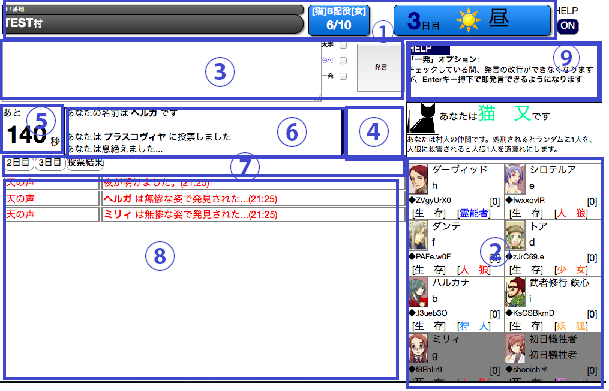
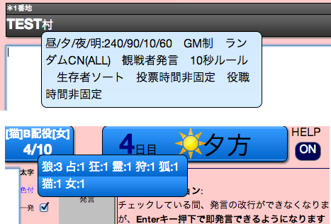
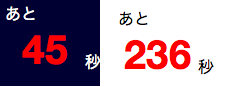
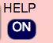

①村の情報
村の情報が表示されます。
マウスポインタを乗せると、詳細な情報が表示されます。

②プレイヤーリスト
③発言フォーム
発言を入力するフォームと発言ボタンです。
太字・色付にチェックをすると、文字を太字・色(青色)付きにします。
「一発」にチェックをすると、改行ができなくなる代わりにEnterキー押下で即発言できるようになります。
詳しくはこちら
④アクションボタン
⑤残り時間
あと何秒で今のフェーズが終わるかを表しています。
以下の場合、残り時間が赤色で表示されます。
・昼に生存者が発言できない間
・役職時間非固定ルールで、人狼が襲撃できない間
・少女ありの村で、少女の能力実行が可能な間

⑥情報ウィンドウ
自分の役職、名前、能力結果など、様々な情報が表示されます。
⑦ログセレクター
⑧ログ
⑨ヘルプウィンドウ
マウスポインタが乗った箇所の簡単な説明が表示されます。
右上のスイッチで表示／非表示を切り替えることができます。
